WALE-LES, compare with F. Ducros, F. Nicoud & T. Poinsot, Wall-Adapting Local Eddy-Viscosity models for simulations in complex geometries, article
openFoam
nonuniform block mesh, first cell size dr=L(1-alpha)/(1-alpha^n); L-block size, n-number of elements, alpha-growth factor = refinement^(1/(n-1));
outer block size L=0.5; refinement=4; cells in outer block n=54; alpha=1.0265; dr=4.266e-3; mesh : hexahedra: 393 660; dt=0.1; CFL around 4; sim time 1000; ExecutionTime = 15 143 s, mpi np 6;
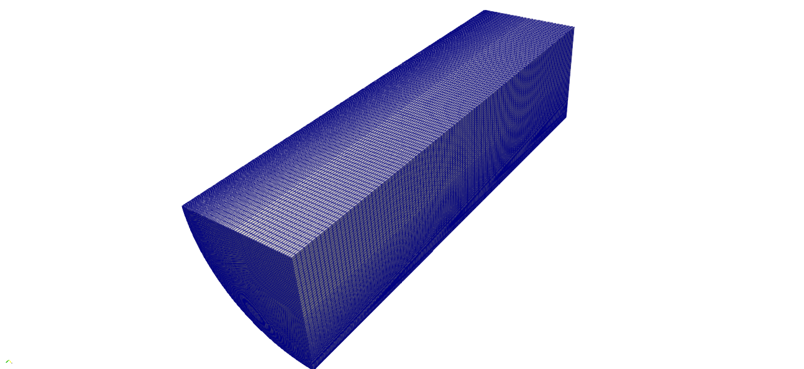
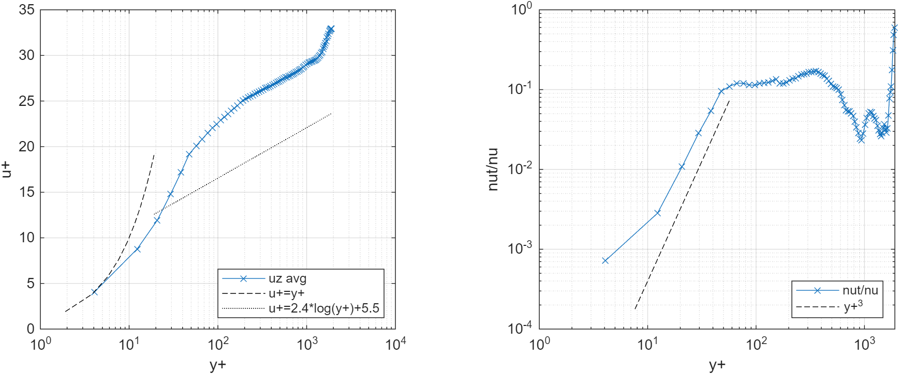
Re=10 000;
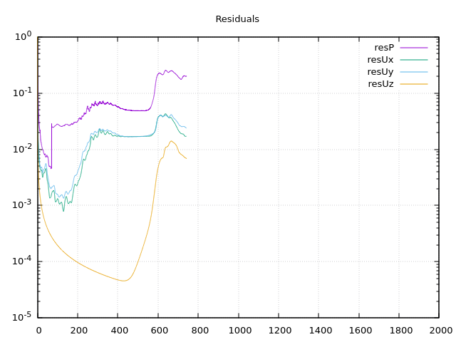
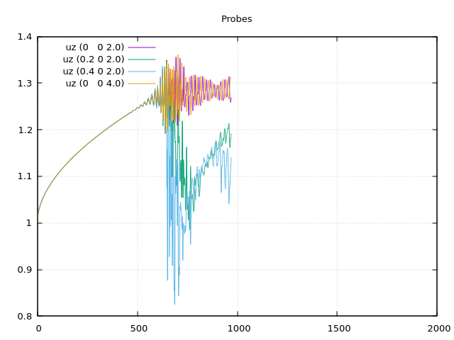
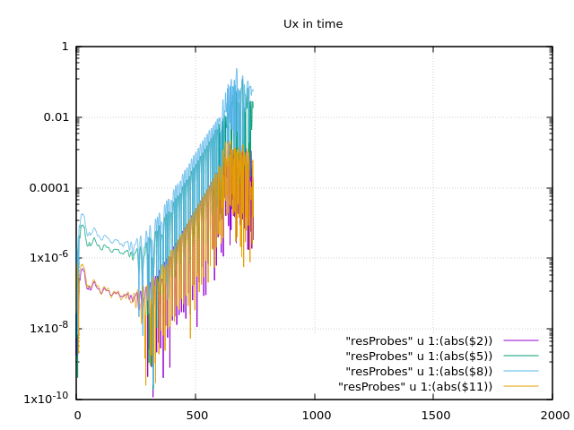
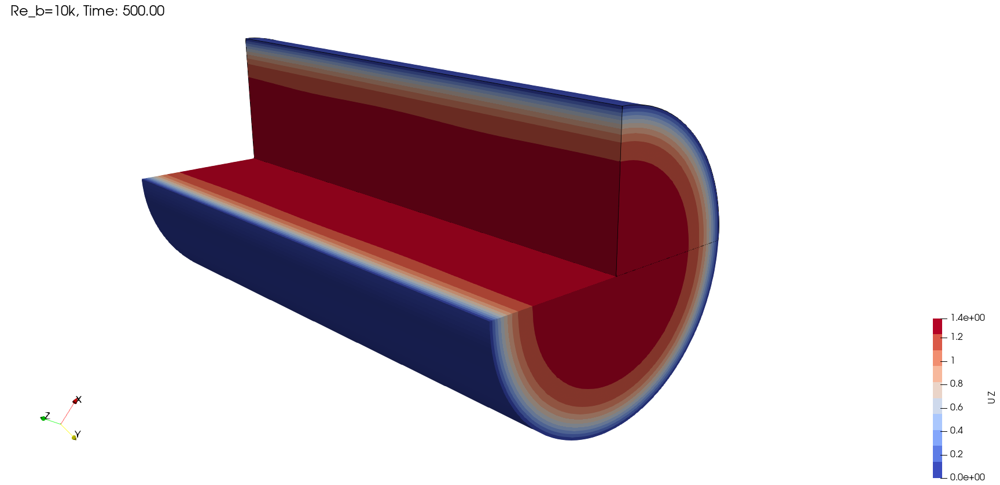
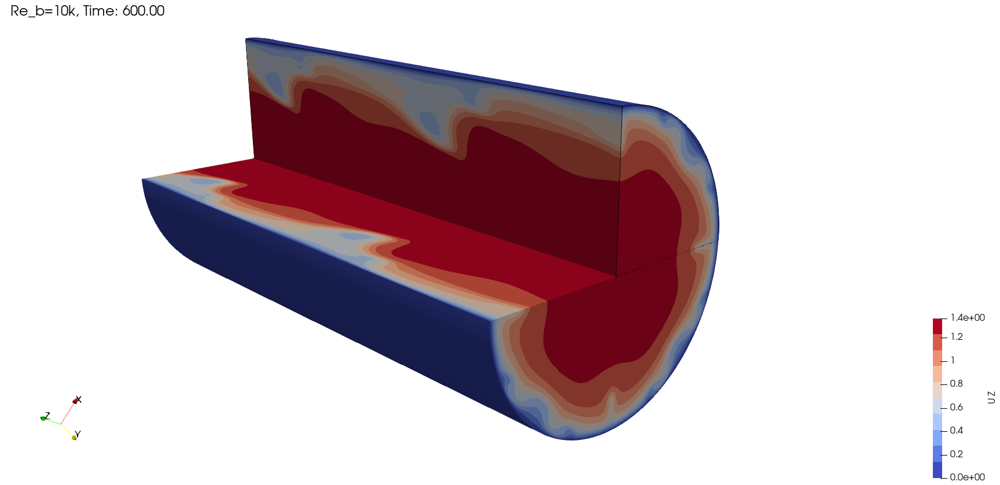
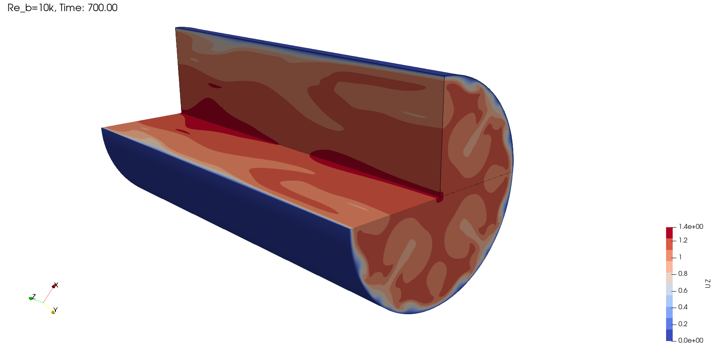
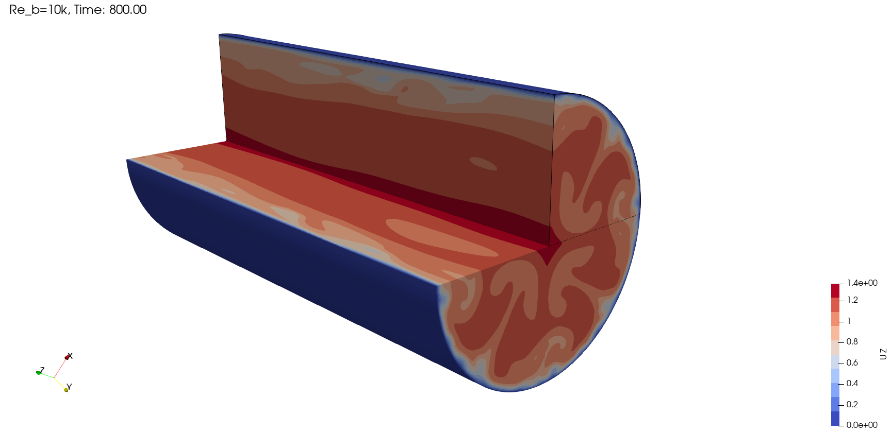
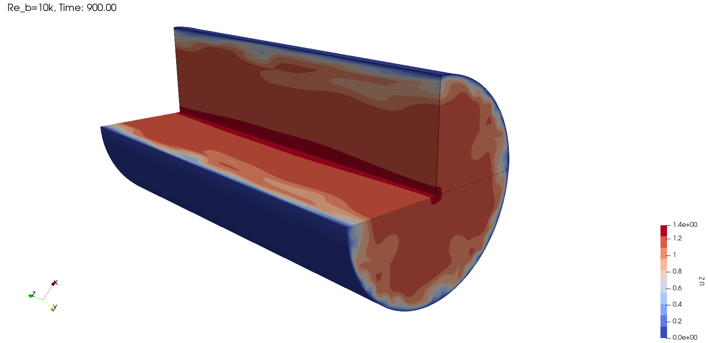
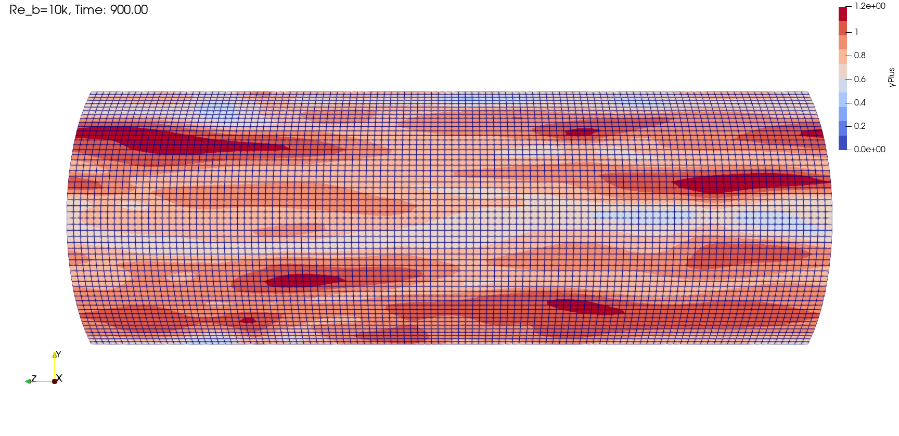